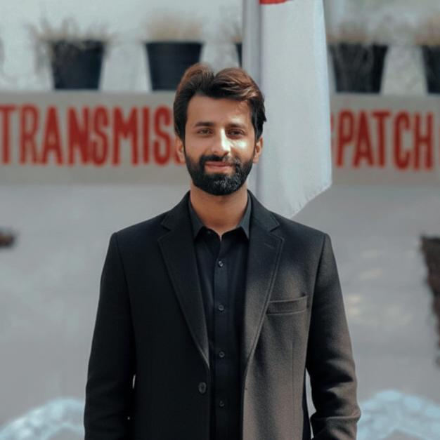

Hafiz Muhamamd Mubashir
Software Engineer
Contact
 03315363528
03315363528 mubashir.ntdc@gmail.com
mubashir.ntdc@gmail.com- Lahore
Education
- Bachelor of Science in Software Engineering
- The University of Lahore 2016-2020
-
I completed my Bachelor of Science in Software Engineering from University of Lahore, Lahore. During my studies, I gained strong knowledge in programming, data structures, database systems, and software development
- Diploma of Associate Engineer (DAE)
- PAK Polytechnic Institute, Lahore2012-2015
-
I completed my Diploma of Associate Engineering (DAE) in Electrical Technology, where I studied electrical circuits, power systems, electrical machines, and gained practical experience in installation and maintenance of electrical systems.
- Secondary School Certificate (SSC)
- SOS Hermann Gmeiner School2010-2012
-
I completed completed my Secondary School Certificate (SSC) in Computer Science, where I developed basic knowledge of computer fundamentals, programming concepts, and information technology.
About Me
My name is Hafiz Muhamamd Mubashir, I am an Office Assistant (IT) at National Grid Company of Pakistan, where I leverage my technical skills to support and enhance our government operations. With several years of experience in the IT sector, I am passionate about technology and its potential to drive efficiency and innovation. My journey allows me to explore new technologies.I am passionate about connecting with like-minded professionals and exploring collaboration opportunities!
Skills
- Technical SKills
- MERN Stack
- HTML 5
- CSS
- Bootstrap
- Javascript
- Express Javascript
- React Javascript
- MySQL
- Mongo DB
- Node Javascript
- VS Code
- Game Development
- C#
- Unity
- Soft Skills
- Good Learner
- Problem Solving
- Team Management
- Communication Skill
- Teamwork
- Leadership
Experience
- National Grid Company of Pakistan
- Office Assistant (IT) 2021- Present
- Install, configure, and maintain office IT systems and equipment.
- Provide troubleshooting and technical support for desktops, laptops, printers, and network devices.
- Perform basic coding and software-related tasks as required.
- Manage and handle the Finance Module of SAP ERP, including financial entries and process support
- Prepare and type official letters, drafts, and office notings.
- Maintain and organize office records and documentation.
- Perform additional duties assigned by management
- Argon Tech
- Game Developer2020-2021
- Develop and maintain 2D/3D games for mobile, PC, or web platforms.
- Write clean, efficient, and optimized code for gameplay features and mechanics
- Work with game engines such as Unity to build interactive gaming experiences
- Collaborate with designers, artists, and sound developers to implement game assets and features
- Debug, test, and fix technical issues to improve game performance and stability
My Hobbies
- Playing Cricket
- Football
- Badminton
- Learning
- Explore New ideas
References
- Will be provided on demand